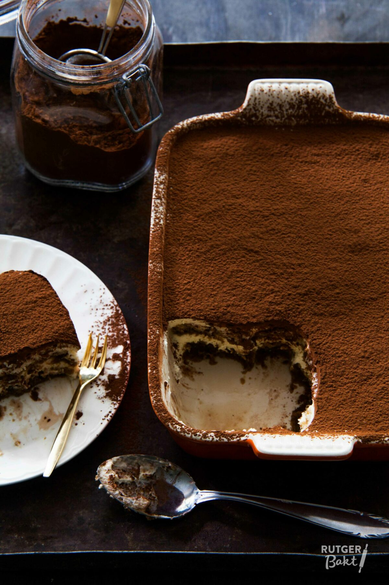

tirimasu
Ingrediënten Voor de lange vingers
- 200 ml espresso
- 50 ml amandellikeur, marsala of cognac
- 1 recept lange vingers of 1 pak gekochte lange vingers
Ingrediënten Voor de tiramisu met mascarpone
- 4 eidooiers
- 110 gr suiker
- 500 gr mascarpone, op kamertemperatuur
- 3 eiwitten
- snuf zout
Ingrediënten Voor bovenop
- cacaopoeder, om te bestrooien
Berijdingswijze
- Klop de eidooiers met de helft van de suiker tot een zeer romig mengsel, dit duurt zeker 5 minuten.
- Voeg vervolgens de mascarpone toe aan het eidooiermengsel en klop dit tot een homogene massa.
- Doe de eiwitten met een snuf zout in een vetvrije kom en klop ze stijf.
- Voeg lepel voor lepel de resterende suiker toe.
- Spatel het stijfgeklopte eiwit door het mascarponemengsel en meng dit tot een egale crème.
- Meng de espresso met de drank naar keuze.
- Doop hier de lange vingers één voor één kort in en bedek daarmee de bodem van een (oven)schaal van ongeveer 25×18 centimeter.
- Verdeel hier de helft van het tiramisumengsel overheen en strijk dit glad.
- Herhaal beide stappen en zet de tiramisu minimaal 4 uur in de koelkast om op te stijven.
- Bestuif voor het serveren met een dikke laag cacaopoeder.
